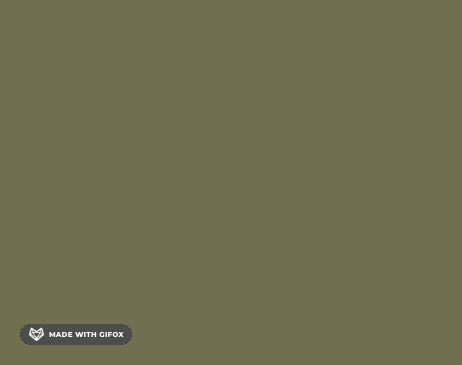

footer 始终保持在最底部 css 实现与 js 实现优缺点对比
这篇文章发布于 2021/05/04，归类于 CSS
标签：
footer一直保持到底部怎么实现，footer区域保持在底部，footer固定到底部
让 footer 一直保持在最底部是比较常见的需求，css 和 js 都可以实现，一般推荐使用 css 实现，下面来看看具体实现，以及他们的优缺点

以下面的结构为例
<body>
<article class="container">
<header>顶部</header>
<section class="main">中间内容部分</section>
<footer>底部</footer>
</article>
</body>需要考虑两种情况：
- 内容没占满视窗时，footer 在最底部，需要 body 有最小高度，才能撑起来
- 内容较多时，滚动到底部才能看到 footer，且不遮挡内容区域
方法 1：css 方式 - position: absolute
- footer 使用 position: absolute; bottom: 0; 保持在底部。
- 对于可能遮挡中间内容区域的问题，将 body 设置为 relative，注意不是 container，这样可以让 footer 内容保持在body最底部
- 内容较多时，footer position: absolute 会遮挡内容部分，需要将 container 加一个 padding-bottom: footer 高度，来防止遮挡
方法 1 - 在线示例、方法 1 - 代码 | github
优点：css 即可实现
缺点：需要知道 footer 具体高度。对于 footer 高度不确定的场景，就不合适了。
* { margin: 0; }
body {
position: relative; /* 当 footer 为 position 为 absolute 时，放置到 body 底部 */
min-height: 100vh; /* 最小高度 100% 视窗高度 */
}
.container {
padding-bottom: 50px; /* 防止内容被 footer 遮挡 */
}
footer {
position: absolute; /* 放到页面最底部 */
bottom: 0;
left: 0;
height: 50px;
width: 100%;
background: yellow;
}方法 2：css 方式 - 中间部分 flex: 1
使用 flex 纵向布局，中间部分使用 flex: 1，内容不足时自动撑开
方法 2 - 在线示例、方法 2 - 代码 | github
优点：css 即可实现，不需要知道 footer 区域高度
缺点：需要注意父容器高度，最小高度要占满屏幕，有嵌套时，需要使用 height: 100%；且整体需要使用 flex 布局
* { margin: 0 }
.container {
display: flex; /* 使用 flex 纵向布局 */
flex-direction: column;
min-height: 100vh;
box-sizing: border-box;
}
.main {
flex: 1; /* 中间内容部分 flex-grow: 1 内容不足时自动撑开 */
}
footer { /* 不需要知道底部高度 */
padding: 10px;
background: yellow;
}方法 3：js 方式 - 监听页面整体滚动高度与视窗高度动态设置样式
页面 mounted 后，判断视窗高度 和 整体滚动高度（包含 footer高度），如果小于视窗高度，则添加一个 固定底部的 class，否则去掉该 class
方法 3 - 在线示例、方法 3 - 代码 | github
优点：无
缺点：页面不刷新的情况下，动态增加内容，需要重新判断一次，不推荐
下面是 vue 的实现
// :class="fixed ? 'flexd-bottom' : ''"
// data: { fixed: false }
// 处理 footer
methods: {
handleFooter() {
let { clientHeight } = document.documentElement;
this.fixed = false
this.$nextTick(() => {
let { scrollHeight: pageScrollHeight } = document.querySelector('.container')
// 如果整体页面高度(包含默认加载的 bottom) < 视窗高度 固定到底部
this.fixed = pageScrollHeight < clientHeight
})
}
},
mounted() {
this.handleFooter()
}
// &.fixed-bottom {
// position: absolute;
// bottom: 0;
// }测试 demo
<head>
<meta charset="UTF-8">
<title>测试 footer</title>
<script src="https://cdn.jsdelivr.net/npm/vue/dist/vue.js"></script>
<style>
* { margin: 0 }
footer { height: 50px; background: yellow; }
</style>
</head>
<body>
<article id="app" class="container">
<header>
<h2>foot 始终在顶部测试</h2>
</header>
<section class="main">
占位数：<button v-for="item in list" :key="`btn-${item}`" @click="changeCount(item)">{{item}}</button>
<div v-for="item in count" :key="`gap-${item}`">
占位 {{item}}
</div>
</section>
<footer>
Copyright © 2016-2021 zuo11.com. 鄂ICP备16014741号-1
</footer>
</article>
<script>
let app = new Vue({
el: '#app',
data() {
return {
list: [5, 50, 100],
count: 5
}
},
methods: {
changeCount(value) {
this.count = value
}
}
})
</script>
</body>
</html>